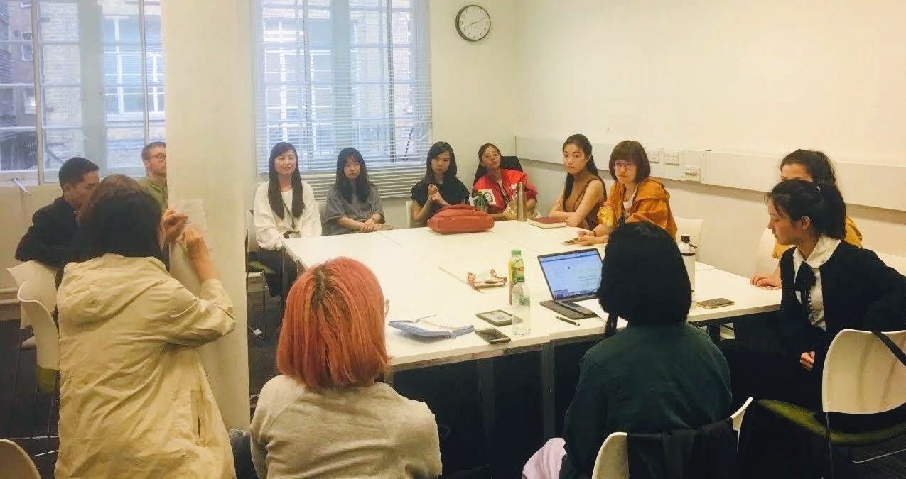

Happy 1st Birthday to us!
We celebrate our first year of activities with a round up of our readings and events, with thanks to our community.
20th April 2020

*Our monthly meetings offer a space to share and discuss short science and speculative fiction stories from the sinosphere that has been translated into English. Here's our second meeting in May 2019.*
We began a little over a year ago when I (Angela) met Isaac Lyu Guangzhao at an event in London with readings and a discussion by Chinese science fiction writers Xia Jia and Chen Qiufan. Later, we talked with each other about wanting a space to explore more sinophone science and speculative fiction, with hopes to introduce these to a wider readership too. Soon, we connected with Mia Ma Chen. The three of us had been reading and enjoying a lot of contemporary Chinese science fiction, we're all fans! As we had each also been writing academically on it from different research interests, we felt we had a range of stories and current topics that we wanted to discuss collectively, and add to the growing discourse around Chinese language SF.
We weren't expecting how much the London Chinese Science Fiction Group could grow in just one year, and we're excited to have become a meeting point for so many people. We have our regular and irregular attendees who all shape insightful and enjoyable sessions, this monthly newsletter, a WeChat group chat (of nearly 100 contacts!) where we can share articles and sci-fi events in town to visit together, as well as our public WeChat account where Guangzhao and Mia have been posting articles about our activities.
In addition, we've been working with authors and translators too, and connecting them to the readers in our LCSFG. Our first occasion was a public event with author Chen Qiufan, who gave a talk on e-waste in relation to his debut novel Waste Tide. He also joined us more recently online with translator Emily Jin, as we discussed their collaboration with last month's story. We're looking forward to our next online session with author Gu Shi, as we continue to meet virtually and across time zones (see below for more details!). These shared conversation between readers and writers have been popular, and we hope to arrange these as frequently as possible.
To me, the LCSFG has been really rewarding in constantly renewing my excitement for SF, and ways of storytelling and worldbuilding. It's impacted my projects in art and climate change - having also collaborated on pieces with writers Regina Kanyu Wang, Gu Shi and Xia Jia this year for the arts - just as I know it's been nourishing for Guangzhao and Mia's PhD work.
I hope the LCSFG has brought you, our fellow readers and SF fans, many fun and engaging moments so far. With your continued feedback and guidance, we can't wait to deliver another year of great tasters across sinophone science fiction!
Thank you and happy reading!
- Angela Chan
Here are all the stories we've read together so far, and you can check them out individually on the online
library.
- Hao Jingfang Folding Beijing (translated by Ken Liu 2015)
- Liu Cixin The Wandering Earth (translated by Holger Nahm 2000)
- Ken Liu Good Hunting (2012)
- Xia Jia The Psychology Game (translated by Emily Jin and Ken Liu 2017)
- Chen Qiufan The Waste Tide (translated by Ken Liu 2019)
- Wang Jinkang The Reincarnated Giant (translated by Carlos Rojas 2012)
- Ma Boyong The City of Silence (translated by Ken Liu 2016)
- Han Song The Last Subway (translated by Joel Martinsen 2012)
- Xia Jia Spring Festival: Happiness, Anger, Love, Sorrow, Joy (translated by Ken Liu 2014)
- Zhang Ran The Snow of Jinyang (translated by Ken Liu and Carmen Yiling Yan 2016)
- Chen Qiufan The Ancestral Temple in a Box (translated by Emily Jin 2020)
- Gu Shi Poems and Distant Lands (translated by Ken Liu 2019)
Guangzhao has also written a nice birthday piece on WeChat: 研讨预告 | 周年祭
这是我们的第十二次研讨会。这是也我们的第一个周年纪念。
说起来，故事的开始还要追溯到2018年10月份，那时候我的PhD生活刚刚开始，闲来无事，陈楸帆和夏笳老师要来伦敦参加活动这件事不知怎么就让我给知道了，遂去之。也正是在这里，我认识了那位后来提议一起办研讨会的朋友Angela。转眼到了去年四月，Angela找到我，问我说有没有兴趣和她一起组织一个聚焦中国科幻的小团体，虽然在伦敦有数不清的科幻小组，但似乎还没有可以讨论中国科幻小说的地方。一开始我其实是忐忑的，毕竟不像Angela有丰富的策展经验，我在活动策划方面算得上是十足的小白，连微信平台也是现学现卖。不过我又转念一想（人呐，架不住经常转念），这事儿要是办成了，倒也是蛮有意义。所以我赶鸭子上架，做了好一阵儿的心理建设。
《一张属于大佬的合影》：David J. Lally; 陈楸帆；夏笳；Nicky Harman（左起）
后来的进展要比我设想的顺利很多。我们组织讨论，组织讲座，参加去年都柏林的世界科幻大会，过程里也认识了很多很多志同道合的朋友们，很高兴能看到大家因为这个平台相认识，甚至在一起（并没有）。我很珍惜能够和大家讨论科幻的时间，也很珍视大家对之前十几篇推送的批评和褒奖。毕竟我也明白，署名“老吕”的文章里充满了术语，而且语文水平着实有限，不太容易推广得出去。正因为此，大家的意见和反馈便显得尤为难能可贵。
我还依稀记得那天大会，充电插座就在我眼前10公分的地方，而我，愣是找了一晚上没看到……